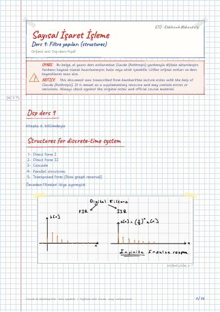

Sayısal İşaret İşlemenin Temelleri · Dijital ders notu
Ders 9: Filtre yapıları (structures)
- Ders
- Sayısal İşaret İşlemenin Temelleri (ELM367)
- Dönem
- 6. Dönem · 2023–2024 Bahar
- Biçim
- PDF · 15 sayfa · 0,6 MB · el yazısı görünümlü LaTeX
- Orijinal not
- Dsp-ders-9.pdf

The digital notes were created from the handwritten notes with the help of Claude (Anthropic); they are meant as a supplementary resource and may contain errors. Always rely on the original notes and the official course materials.
Bu notta neler var?
- Dsp ders 9
- Structures for discrete-time system
- IIR Filter Design
- Flow notation
- Block diagram notation
- Direct Form-I
- Cascade Structures
- Parallel implementation
- Transpozition theorem (Flow-graph reversal theorem)
- FIR realization
- In cascade Structure
- Type-I
- Type II
- Type III
- Type IV
Notun metni
Düz metin olarak göster (formüller ve çizimler yoktur)
Structures for discrete-time system
Direct form II
Transposed form (flow graph reversal)
Önceden filtreleri ikiye ayırmıştık
bilgisayarla yapılabilir FIR
bilgisayarda yapabilmek için belli bir noktadan sonra kesmek gerekiyor o zaman aslında FIR olur böylece yaklaşıklık yapılır.
Ama biz tam olarak bulmak istiyoruz, o zaman başka bir yöntem kullanacağız.
IIR Filter Design
specs. (Teknik özellikler)
realize (gerçeklemek) (this week)
Özel sadeleşme durumu bu IIR bir filtrenin sistem fonksiyonu
Block diagram notation
Önceki girişlerden q tane değer saklanmalı
Önceki çıkışlardan p tane değer saklanmalı
artı artı diye yaptıklarımız artık eksi olacak a 'larda sola geçirirken - oluyor
önceden bunlar artı idi genel gösterimizde
O zaman H(z) tekrar bu şekilde yazabiliriz
Burada 3 tane değeri hafızada saklamak gerekir. (gecikmelerden dolayı)
S.O.S'ların toplamı şeklinde ifade edilmelidir.
Transpozition theorem (Flow-graph reversal theorem)
Teoreme göre x[n] ve y[n] 'in yeri değiştirilip tüm okların yönü terslenirse yeni sistem eskinin eşidir.
Simetriğini alırsak bizim alıştığımız forma geçer
use transposition theorem:
In cascade Structure:
Önceden böyle bir örnek göstermiştik
Linear Phase Filter
IIR × (hiç bir zaman sağlayamaz) FIR sağlayabilir
M : even integer (çift)
M : odd integer (tek sayı)
M : even integer (çift sayı)